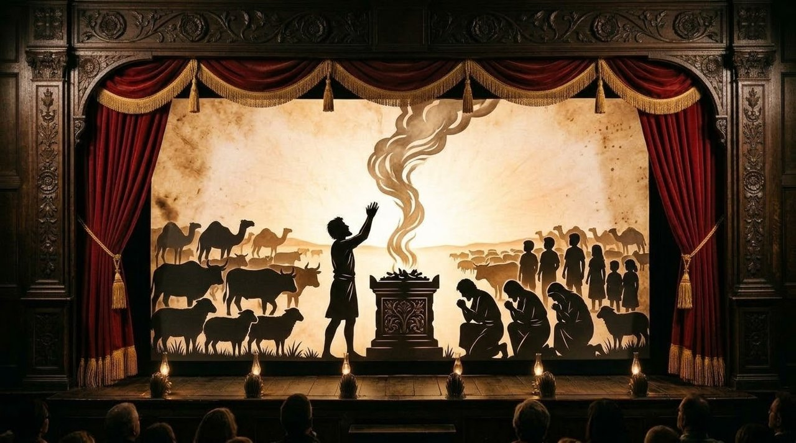

Job 42: The Latter End of Job
Our later end will always be greater than our former, because we are all heirs in Jesus.
✦ ✦ ✦Use the arrow keys or swipe to move. Tap any gold reference to read the verse.

Where we are: Part 5, Job 42
Job isn't restored by his own wisdom, his works, by proving his own righteousness before God. When the Lord offered Job to gird up his loins and confront Him, Job could only cover his mouth and sit in silence. So, it is God who restores Job.
For who are we?
For who are we? Were we there when He placed the stars in the heavens and made the leviathan? When the lightning was formed and the thunder of His wrath was made?
God, appearing in a whirlwind to Job asks similar questions of righteous Job. He asks these things of the created who is questioning his Creator.
And Job, having been subject to this glory of God and His Majesty, replies;
I abhor myself, and repent in dust and ashes
Then Job answered the Lord, and said, I know that thou canst do every thing, and that no thought can be withholden from thee. Who is he that hideth counsel without knowledge? therefore have I uttered that I understood not; things too wonderful for me, which I knew not. Hear, I beseech thee, and I will speak: I will demand of thee, and declare thou unto me. I have heard of thee by the hearing of the ear: but now mine eye seeth thee. Wherefore I abhor myself, and repent in dust and ashes.Job 42:1-6
Job, having seen the glory of God, His power and might, he says he has uttered what he understood not. In ignorance, he demanded of God the "why" to his predicament, and now sees the Who behind all things. He has gained understanding and repented towards the truth of the power of God. Left humbled in the dust and ash of his mourning.
This settled, Job has gained the understanding that God does what He does, at a higher purpose and longer view than His creation can even comprehend.
Ye have not spoken of me the thing that is right
And it was so, that after the Lord had spoken these words unto Job, the Lord said to Eliphaz the Temanite, My wrath is kindled against thee, and against thy two friends: for ye have not spoken of me the thing that is right, as my servant Job hath. Therefore take unto you now seven bullocks and seven rams, and go to my servant Job, and offer up for yourselves a burnt offering; and my servant Job shall pray for you: for him will I accept: lest I deal with you after your folly, in that ye have not spoken of me the thing which is right, like my servant Job. So Eliphaz the Temanite and Bildad the Shuhite and Zophar the Naamathite went, and did according as the Lord commanded them: the Lord also accepted Job.Job 42:7-9
Eliphaz
the Temanite
Bildad
the Shuhite
Zophar
the Naamathite
The Lord then turns to Eliphaz and the two friends, saying they kindled His wrath, having spoken falsely about Him. Things that aren't right. Their prosperity gospel theology and their standing in judgment as if they were God Himself against Job was wrong.
Human nature, but not God's
The friends of Job, (and later, the young accuser Elihu son of Barachel the Buzite), are given opportunity to make multiple philosophical and theological points regarding the nature of God, His justice and their natural suspicion of those who suffer as being sinners, and worse, that those that suffer worse than they do must be greater sinners than they are.
This line of thought is just as common today as it was then, and is human nature. But not God's. And while there is general wisdom to be found in their arguments, the application they choose to make is wrong.
Job the mediator
And He tells them to make sacrifices and offer burnt offerings, and Job's prayers for forgiveness for them He will accept. This act of humiliation, seeking forgiveness through the man they had slandered, is done according to God's word, and the Lord accepted Job.
This, in a way is symbolic of Christ as the mediator between God and man, as Job is the mediator here for his friends.
When he prayed for his friends
And the Lord turned the captivity of Job, when he prayed for his friends: also the Lord gave Job twice as much as he had before.Job 42:10
And when Job prayed for his friends, the Lord turned the captivity of Job, the allowances of the devil to control his fate, and restored Job twice as much as he had.
In all these things Job never spoke improperly, but in ignorance demanded of God. But it was Job's forgiveness of others who had wronged him that led God to restore him, and bless him with more than he had.
Job reached peace with God just by his understanding and faith. But it was forgiveness of others that restored him. This is such an important point to remember.
The latter end more than his beginning
Then came there unto him all his brethren, and all his sisters, and all they that had been of his acquaintance before, and did eat bread with him in his house: and they bemoaned him, and comforted him over all the evil that the Lord had brought upon him: every man also gave him a piece of money, and every one an earring of gold. So the Lord blessed the latter end of Job more than his beginning: for he had fourteen thousand sheep, and six thousand camels, and a thousand yoke of oxen, and a thousand she asses.Job 42:11-12
Job first receives the comforting and support, from family and friends, that he needed. And their financial support to him that was without, allowed Job to restore his wealth. The love and respect Job had shown others paid off, as they loved on him with emotional support and alms. Gold and riches he used to make his flocks great again.
Inheritance among their brethren
He had also seven sons and three daughters. And he called the name of the first, Jemima; and the name of the second, Kezia; and the name of the third, Kerenhappuch. And in all the land were no women found so fair as the daughters of Job: and their father gave them inheritance among their brethren.Job 42:13-15
And God blessed him with 10 children, seven sons and 3 daughters. And Job's delight in his daughters, naming them for peace, and fragrant spice and beauty, led him to make them co-heirs as their brothers.
Old and full of days
After this lived Job an hundred and forty years, and saw his sons, and his sons’ sons, even four generations. So Job died, being old and full of days.Job 42:16-17
The Lord gave Job a long life, to see four generations come from these children. And so Job died, being old and full of days. Quite a ways away from his lamenting his own birth ().
To better know God
Our struggles and temptations may never be as horrific and total as Job's test. We may seek to know why from the Lord. We may be tempted to blame Him, to curse God and die, as Job's wife said. Others may use the occasion to imply we deserve it.
But we should see the opportunity to better know God. To grow our faith, and our understanding of Him. To know that here, or in the resurrection, we shall overcome.
Greater than our former
The Lord will deliver us, He has turned the captivity, the bondage of sin we are all under, to liberty in Christ. We have the Comforter sent by Him. Our later end will always be greater than our former, because we are all heirs in Jesus.
But seek ye first the kingdom of God, and his righteousness; and all these things shall be added unto you.Matthew 6:33
Amen.
His (and our) Redeemer
Like Job, we are born of woman and blessed by God to an abundant life, no matter our station, having life. When temptation comes, and the law enters, and sin slays us, the Accuser, Satan, does his worst to us (tempered by God's mercy).
We have trials, and tribulations. But, entering into grace by faith, we have the hope and promise of God in Christ that our end will be better than our beginning. That at the adoption, when we put on immortality and shed corruption, when we are redeemed, our end will be glorious, as we will be like Him. And like Lot's children, male or female, we are made joint heirs with Christ.
What we have seen
- Why, and WhoIn ignorance, he demanded of God the "why" to his predicament, and now sees the Who behind all things.
- The friends' errorTheir prosperity gospel theology and their standing in judgment as if they were God Himself against Job was wrong.
- The mediatorSymbolic of Christ as the mediator between God and man, as Job is the mediator here for his friends.
- ForgivenessJob reached peace with God just by his understanding and faith. But it was forgiveness of others that restored him.
- The latter endOur later end will always be greater than our former, because we are all heirs in Jesus.
Related